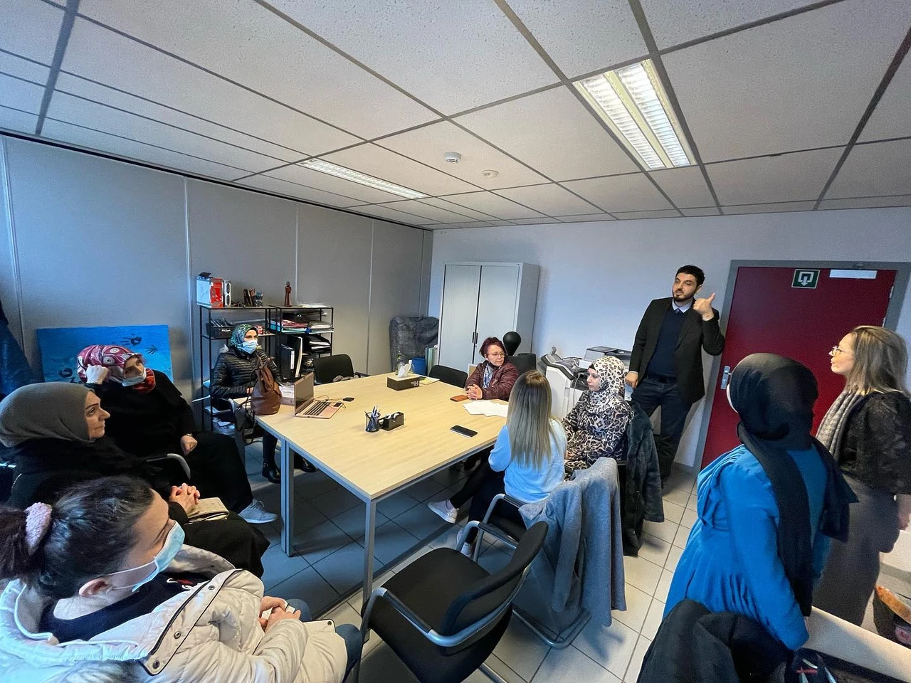
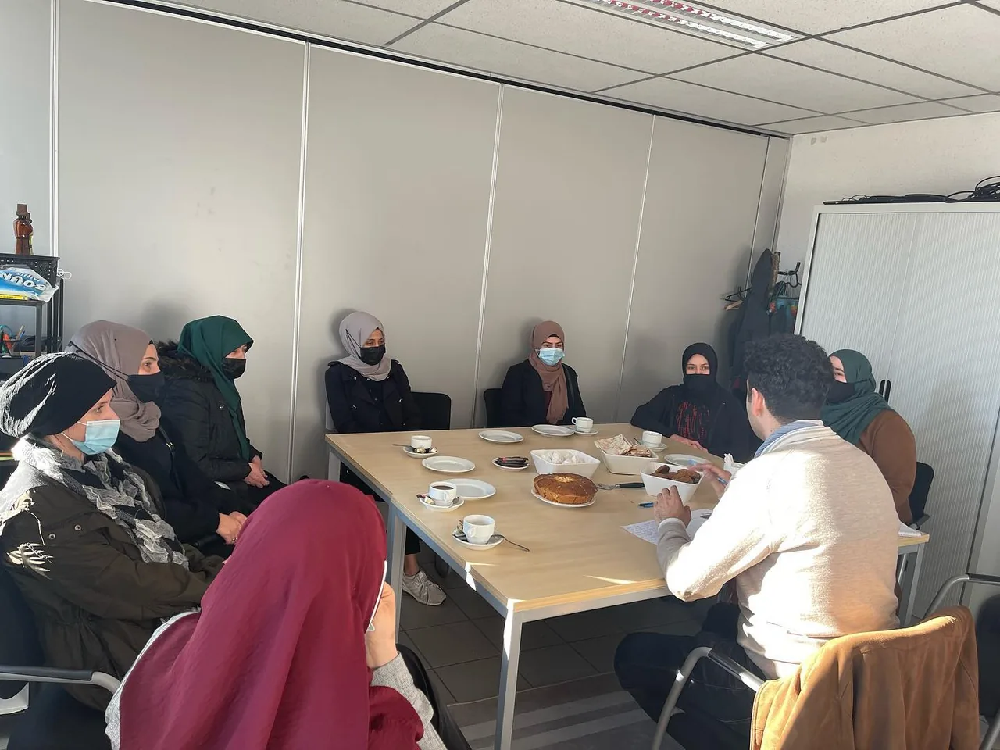
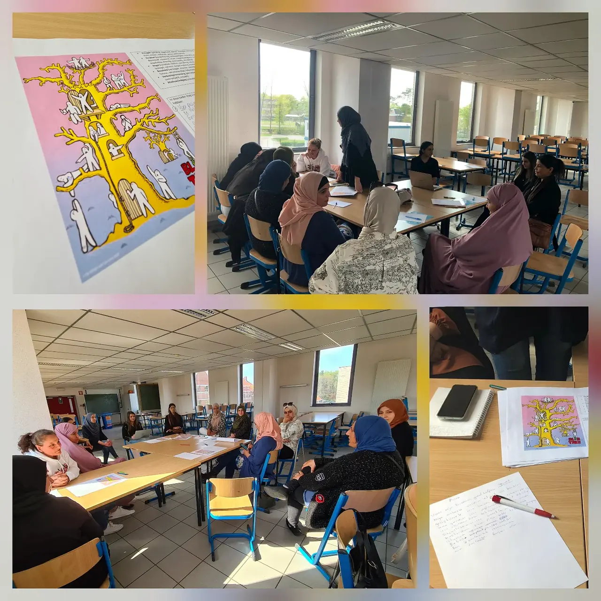
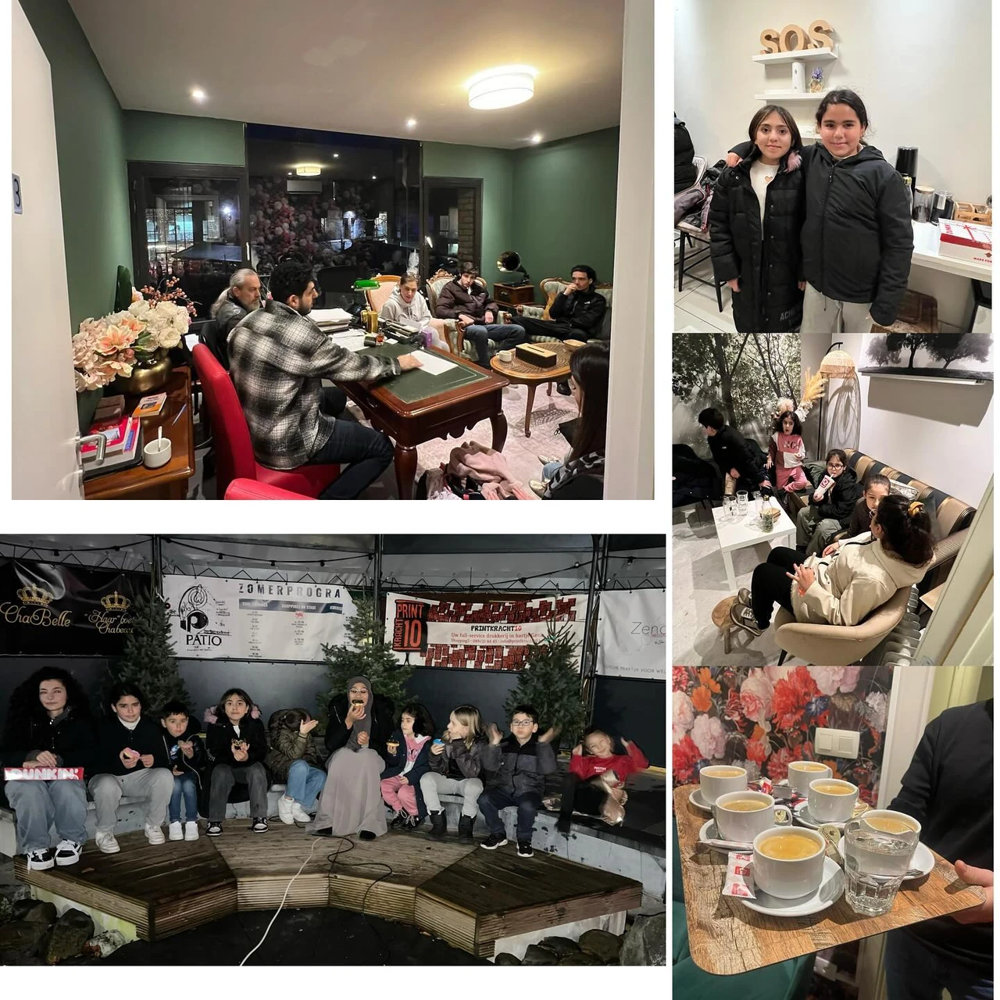

Samen rond het kind
Ouders en school
Ouders betrekken en de verbinding tussen thuis en school versterken.

De omgeving van het kind
Een plaats voor de vragen en ervaringen van ouders
De ontwikkeling van een kind raakt ook aan thuis en school. Daarom geven we ouders een eigen plaats in onze werking.
We organiseren leergroepen en bijeenkomsten waarin ouders elkaar ontmoeten en spreken over opvoeding, persoonlijke ontwikkeling en school. We luisteren naar hun vragen en zoeken samen naar aanknopingspunten.
Project Anne
De verbinding tussen moeders en school
In Project Anne brengt Kalem vzw moeders en school dichter bij elkaar, samen met Atlas College en Stad Genk. Persoonlijke ontwikkeling en het contact tussen thuis en school staan centraal.
Leergroepen en gesprekken geven ouders ruimte om ervaringen en vragen te delen. We willen dat ouders zich gehoord voelen en makkelijker in gesprek kunnen gaan met de schoolomgeving.
De rol van ontmoeting
Ouders vertellen wat hen bezighoudt. Mensen uit de schoolomgeving luisteren en lichten hun werkwijze toe. Zo krijgt ook het contact zelf aandacht.
Project Anne in onze geschiedenis
Ervaringen delen
Gesprekken en gezamenlijke reflectie
We geven de ervaringen van moeders een plaats in het gesprek over school en ontwikkeling. Ouders en betrokkenen luisteren naar elkaar en bespreken wat zij nodig hebben.
De gesprekken met studenten van KU Leuven en betrokkenen van Stad Genk laten zien hoe verschillende perspectieven samenkomen rond Project Anne.

Ouderwerking
Praten over opvoeding en opvoedingsstijlen
Kalem vzw brengt ouders samen rond opvoeding en opvoedingsstijlen. Er is ruimte voor de vragen die leven in een gezin en voor het uitwisselen van ervaringen.
We willen ouders de gelegenheid geven om stil te staan bij hun manier van opvoeden. Het gesprek kan gaan over grenzen, communicatie, school of de keuzes van een kind.
Oudercontact hoort bij de ontwikkeling van kinderen. Daarom krijgt het ook buiten een afzonderlijke kinderactiviteit een plaats.

Waarom ouderbetrokkenheid?
Het gesprek over een kind heeft meerdere kanten.
Ouders kennen hun kind thuis. Leerkrachten en begeleiders zien het in een andere omgeving. Door die ervaringen naast elkaar te leggen, kunnen vragen over leren, gedrag of deelname concreter worden besproken.
Kalem vzw maakt ruimte voor dat gesprek, met leergroepen, Project Anne en ouderbijeenkomsten.
Voor ouders
Wilt u weten welke gesprekken of activiteiten er zijn? Stuur ons een bericht via Instagram of Facebook. Vermeld kort of uw vraag over opvoeding, school of een kinderactiviteit gaat.
Voor scholen en lokale partners
Een voorstel rond ouderbetrokkenheid begint bij de betrokken ouders en de vraag die leeft. We bespreken graag met u hoe Kalem daarin kan bijdragen.
Bespreek een mogelijke samenwerkingBouwt u mee aan kansen voor kinderen in Genk?
Voor scholen, de stad en projectpartners die samen aan ontwikkeling willen werken.